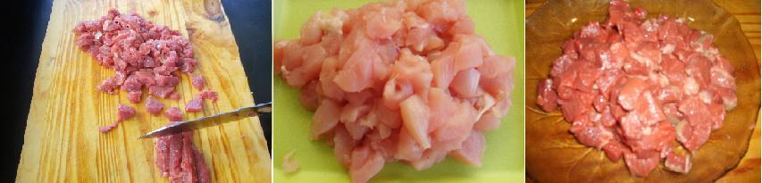

El verdadero origen del taco no se conoce pero se cree que fue creado en el México prehispánico. Se tienen dos referencias de esta época: la primera es de Moctezuma, quien utilizaba de cuchara las tortillas hechas en piedras calientes, formando algo parecido al taco que conocemos hoy en día; la segunda es la forma como enviaban la comida a los hombres que trabajaban todo el día en el campo, envuelta en tortillas. La mesa de nixtamal más antigua proviene del año 1,500 antes de Cristo y se encontró en Soconusco, Chiapas.
Ingredientes
500g de carne de vaca (cuadril o lomo).
300g de carne de cerdo (bondiola o carré).
300g Pechuga de pollo.
10 o 20 Champiñones según el tamaño.
100g de aceitunas verdes o negras o las dos.
300g de queso fresco.
150g de roquefort.
1/2 Morrón rojo o calaorra.
1/2 Morrón verde.
1/2 Morrón amarillo.
1 Cebollas grandes.
2 Dientes de ajo en fetas.
2 Paquetes de discos para tacos.(rapiditas bimbo)
Especias: sal, pimienta, ají molido, orégano y albahaca fresca picada.
Preparación
En una sartén se fríen las cebollas, los morrones y el ajo (se van agregando en ese orden), se reserva.
En otra sartén o wok poner con un poco de aceite de oliva la carne de vaca, de cerdo y de pollo ya saladas (ir poniendo en ese orden, por los distintos tiempos de cocción), cortada en dados de 1x1cm,

cuando ya empiecen a dorar agregar los champiñones, condimentar a gusto, agregar una nuez de manteca y una cucharada sopera de pimentón rojo dulce para conseguir un tono más dorado y un poco más de sabor.
Luego agregar el sofrito de las cebollas y morrones, agregar queso fresco y el roquefort, también cortados en dados, cuando empiezan a derretir los quesos agregar las aceitunas.
Calentar las tortillas (discos) para tacos, poner en la mesa el relleno y las tortillas, para que cada comensal lo prepare a gusto.
Salsa de tomate, lechuga, tomate, mostaza, mayonesa o guacamole (palta, jugo de limón, sal y pimienta)